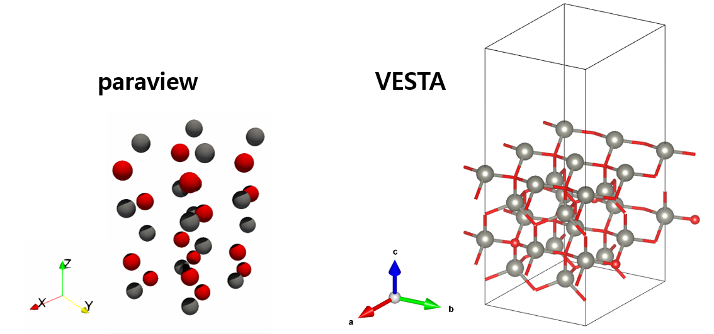
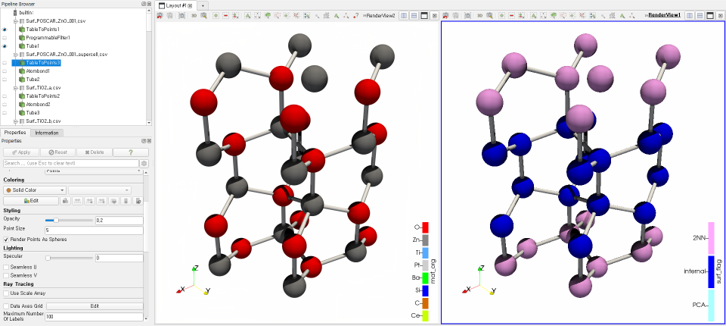
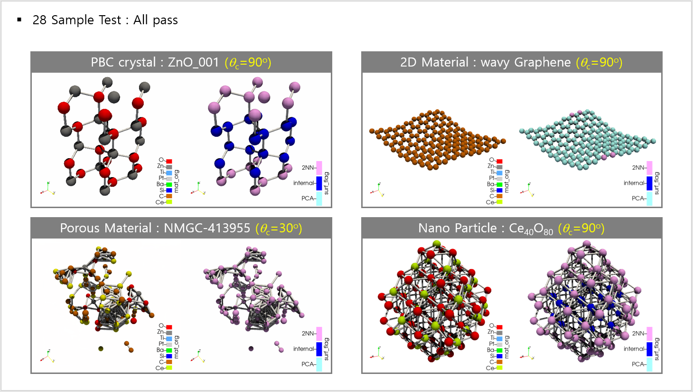

Contributor
시뮬시뮬님
Reference
Paraview
Paraview: Python Programmable Filter
ParaView’s Python documentation!
VTK: Visualization Toolkit
Cornell Virtual Workshop: Paraview Programmable Filter
Paraview + Python
- 범용 Visualizaion Program인 Paraview는 전반적으로 기능이 좋습니다.
- Python을 지원해서 데이터를 만들거나(Programmable source) 수정할 수 있는데(Programmable filter), paraview에서 GUI 기반으로 작업하다가 코드를 작성하려면 막막합니다.
VTK 문법이라 익숙하지 않으면 낯설고,
print()로 내가 다루는 데이터를 찍어보기도 만만찮거든요.1
2
3
4
5
6
7
8
9
10
11
12pdi = self.GetPolyDataInput()
pdo = self.GetPolyDataOutput()
newPoints = vtk.vtkPoints()
numPoints = pdi.GetNumberOfPoints()
for i in range(0, numPoints):
coord = pdi.GetPoint(i)
x, y, z = coord[:3]
x = x * 1
y = y * 1
z = 1 + z*0.3
newPoints.InsertPoint(i, x, y, z)
pdo.SetPoints(newPoints)위 코드를 실행하면 아래처럼 동그라미가 납작해지집니다.

Atomic structure
- 현업에서 제가 그리고 싶은 것은 원자 구조입니다.
- 원자 좌표들만 있는 table을 읽어서 화면에 그리는 것인데, 결합을 의미하는 선이 없어 잘 안보입니다.

- 계산과학 분야에서는 VESTA라는 프로그램을 사용합니다.
- 이 분야의 표준같은 전용 프로그램이라 훨씬 기능이 좋습니다.

- 그러나 제가 확인해야 하는 데이터는 여기에서 보이지 않기 때문에 손에 익은 paraview를 사용하고자 합니다.
- paraview가 VESTA처럼 원자간 연결선만 그려줘도 좋겠습니다.
Paraview Programmable Filter
- 한 시간 구글링 결과 아래와 같은 코드를 만들 수 있었습니다.
- 원자간 거리가
dist_th값보다 작으면 연결선을 그려주는 코드입니다. Filter > Data Analysis > Programmable Filter에서 입력합니다.
1
2
3
4
5
6
7
8
9
10
11
12
13
14
15
16
17
18import numpy as np
dist_th = 3
pdi = self.GetPolyDataInput()
pdo = self.GetPolyDataOutput()
numPoints = pdi.GetNumberOfPoints()
pdo.Allocate()
for i in range(0, numPoints-1):
for j in range(0, numPoints-1):
points = [i, j]
pi = np.array(pdi.GetPoint(i))
pj = np.array(pdi.GetPoint(j))
dist = np.linalg.norm(pi - pj)
if (dist < dist_th) and (dist > 0):
pdo.InsertNextCell(3, 2, points)그리고
tube를 추가해서 선에 입체감을 부여하면 이렇게 됩니다.같은 구조에 왼쪽은 원소별, 오른쪽은 표면원자 여부를 나타낸겁니다.

다른 구조들에도 적용해서 발표자료에 담으면, 목표 달성입니다.
